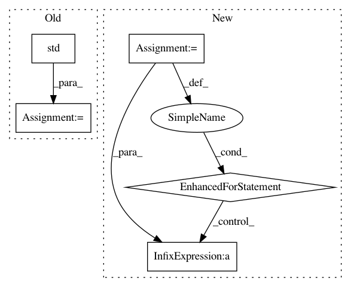

9ce99b87ced85d30b755c4bf8e94b1d592b963bd,nilmtk/metrics.py,,rms_error_power,#Any#Any#,137
Before Change
re = {}
for appliance in predicted_power:
re[appliance] = np.std(predicted_power[appliance] -
df_appliances_ground_truth[appliance].values)
return re
//////////////////// FUNCTIONS BELOW THIS LINE HAVE NOT YET CONVERTED TO NILMTK v0.2 //////////
After Change
both_sets_of_meters = iterate_through_submeters_of_two_metergroups(
predictions, ground_truth)
for pred_meter, ground_truth_meter in both_sets_of_meters:
sum_of_squared_diff = 0.0
n_samples = 0
diff_generator = diff_between_two_meters(pred_meter, ground_truth_meter)
for diff, _ in diff_generator:
sum_of_squared_diff += (diff ** 2).sum()
n_samples += len(diff)
error[pred_meter.instance()] = math.sqrt(sum_of_squared_diff / n_samples)
return pd.Series(error)
//////////////////// FUNCTIONS BELOW THIS LINE HAVE NOT YET CONVERTED TO NILMTK v0.2 //////////
In pattern: SUPERPATTERN
Frequency: 3
Non-data size: 5
Instances
Project Name: nilmtk/nilmtk
Commit Name: 9ce99b87ced85d30b755c4bf8e94b1d592b963bd
Time: 2014-07-10
Author: jack-list@xlk.org.uk
File Name: nilmtk/metrics.py
Class Name:
Method Name: rms_error_power
Project Name: SheffieldML/GPy
Commit Name: 350497c72606f188f83b68588140f0058190559b
Time: 2013-04-16
Author: ibinbei@gmail.com
File Name: GPy/examples/dimensionality_reduction.py
Class Name:
Method Name: mrd_simulation
Project Name: NifTK/NiftyNet
Commit Name: 03e8525394683bb5da7668330cd910c87c7d4501
Time: 2017-04-03
Author: l.fidon@ucl.ac.uk
File Name: data_augmentation.py
Class Name:
Method Name: rand_intensity_normalisation